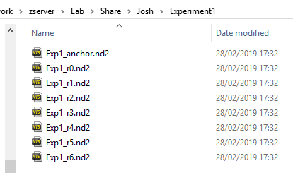
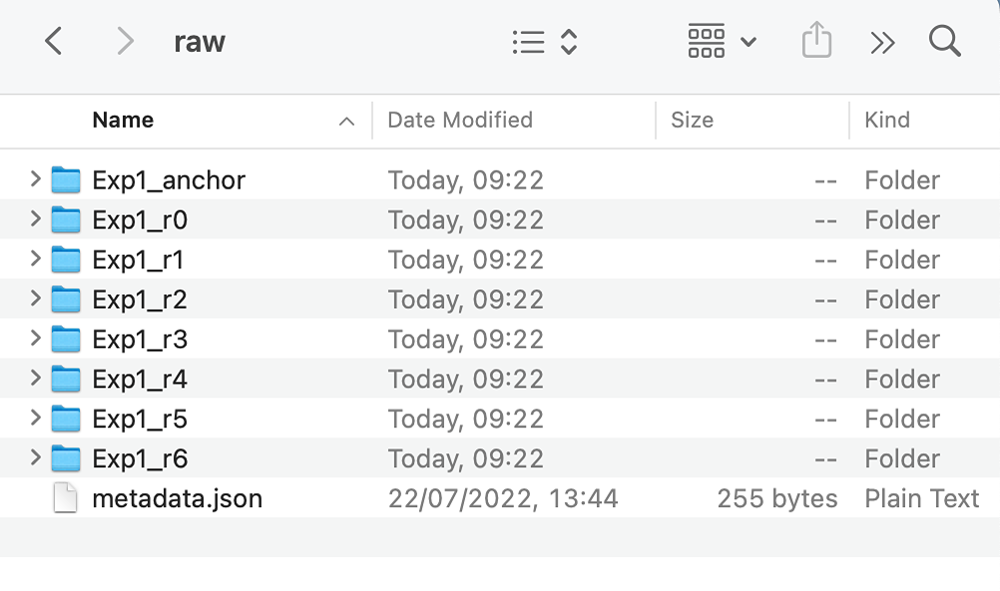
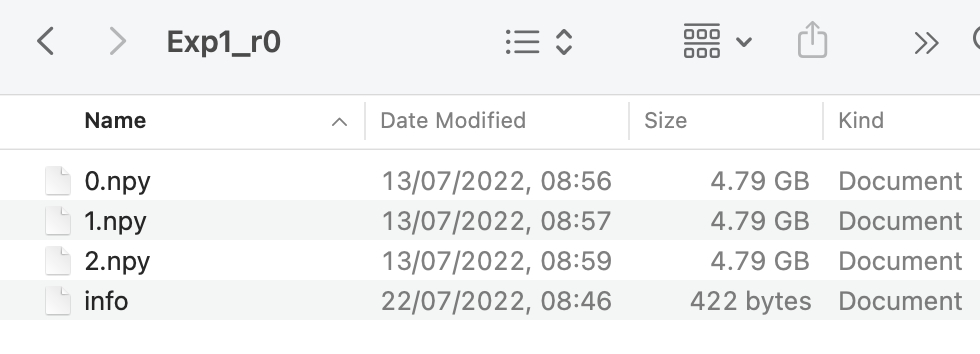
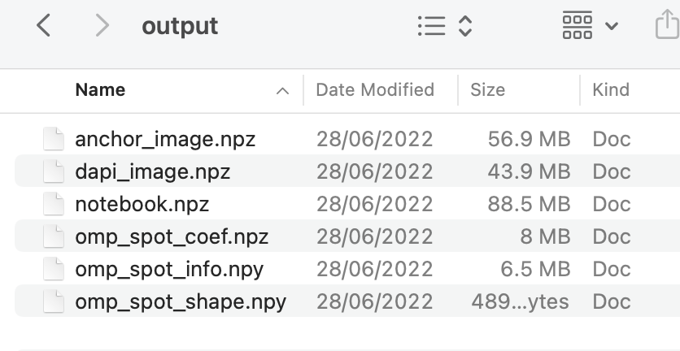
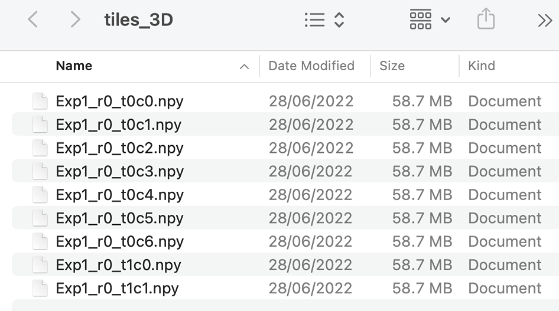
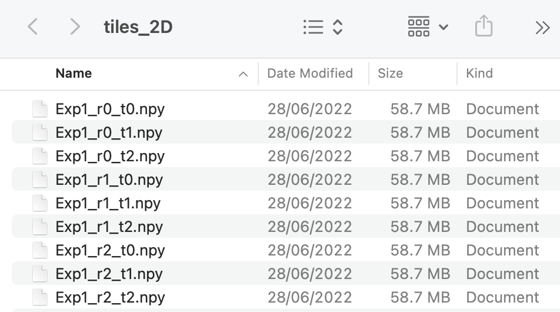

Setting up the Config File
A config (.ini) file needs to be created for each experiment to run the pipeline.
All parameters not specified in this file will inherit the default values.
The parameters with Default = MUST BE SPECIFIED are the bare minimum parameters which need to be set in the experiment
config file.
If any section, or parameter within a section, is added to the config file
which is not included in the default file, an error will be raised when it is loaded in.
Some example config files for typical experiments are listed below.
Example Config Files
[file_names]
input_dir = /Users/.../experiment1/raw
output_dir = /Users/.../experiment1/output
tile_dir = /Users/.../experiment1/tiles
round = Exp1_r0, Exp1_r1, Exp1_r2, Exp1_r3, Exp1_r4, Exp1_r5, Exp1_r6
anchor = Exp1_anchor
code_book = /Users/.../experiment1/codebook.txt
[basic_info]
is_3d = True
anchor_channel = 4
dapi_channel = 0
[file_names]
input_dir = /Users/.../experiment1/raw
output_dir = /Users/.../experiment1/output
tile_dir = /Users/.../experiment1/tiles
round = Exp1_r0, Exp1_r1, Exp1_r2, Exp1_r3, Exp1_r4, Exp1_r5, Exp1_r6
anchor = Exp1_anchor
code_book = /Users/.../experiment1/codebook.txt
[basic_info]
is_3d = False
anchor_channel = 4
dapi_channel = 0
[file_names]
input_dir = /Users/.../experiment1/raw
output_dir = /Users/.../experiment1/output
tile_dir = /Users/.../experiment1/tiles
round = Exp1_r0, Exp1_r1, Exp1_r2, Exp1_r3, Exp1_r4, Exp1_r5, Exp1_r6
anchor = Exp1_anchor
code_book = /Users/.../experiment1/codebook.txt
raw_extension = .npy
raw_metadata = metadata
[basic_info]
is_3d = True
anchor_channel = 4
dapi_channel = 0
[file_names]
input_dir = /Users/.../experiment1/raw
output_dir = /Users/.../experiment1/output
tile_dir = /Users/.../experiment1/tiles
round = Exp1_r0, Exp1_r1, Exp1_r2, Exp1_r3, Exp1_r4, Exp1_r5, Exp1_r6
code_book = /Users/.../experiment1/codebook.txt
[basic_info]
is_3d = True
ref_round = 2
ref_channel = 4
[file_names]
input_dir = /Users/.../experiment1/raw
output_dir = /Users/.../experiment1/output
tile_dir = /Users/.../experiment1/tiles
round = Exp1_r0, Exp1_r1, Exp1_r2, Exp1_r3, Exp1_r4, Exp1_r5, Exp1_r6, Exp1_r7, Exp1_r8
anchor = Exp1_anchor
code_book = /Users/.../experiment1/codebook.txt
[basic_info]
is_3d = True
anchor_channel = 4
dapi_channel = 0
dye_names = DY405, CF405L, AF488, DY520XL, AF532, AF594, ATTO425, AF647, AF750
channel_camera = 405, 555, 470, 470, 555, 640, 555, 640, 640
channel_laser = 405, 405, 445, 470, 520, 520, 555, 640, 730
[file_names]
notebook_name = sep_round_notebook
input_dir = /Users/.../experiment1/raw
output_dir = /Users/.../experiment1/output
tile_dir = /Users/.../experiment1/tiles
anchor = Exp1_sep_round
code_book = /Users/.../experiment1/codebook.txt
[basic_info]
is_3d = True
anchor_channel = 4
Note on Separate Round Config File
The Separate Round config file above is used for registering an additional round to an experiment already run to completion (using a config file like the 3D one indicated above). The pipeline for the Separate Round case cannot be run further that the stitching section.
The run_sep_reg function
(script is here)
runs the pipeline
for the
Separate Round case and then registers the anchor_round/anchor_channel to the anchor_round/anchor_channel
of the full experiment.
These parameters are explained below and here.
file_names
If the names of the files change during the pipeline or if they are being accessed from another computer, the file_names section of the configuration file can also be changed as explained here.
input_dir
The input directory is the path to the folder which contains the raw data.
Examples for the two possible cases of raw_extension are given below (i.e. these are respectively what the input
directory looks like for the config files 3D and .npy Raw Data listed above).


Differences with raw_extension = .npy
It is assumed that when raw_extension = .npy, there were initial .nd2 files which contained excess information
(e.g. extra channels). These were then converted to .npy files to get rid of this.
For the .npy case, input_dir must also contain a metadata .json file. This contains the metadata extracted from the initial .nd2 files using the function save_metadata. An example metadata file is given here for an experiment with 3 tiles and 7 channels.
Also, each name listed in the round parameter indicates a folder not a file.
It is assumed these folders were produced using
dask.array.to_npy_stack
so the contents of each folder should contain a file named info and a .npy file for each tile, with the name
being the index of the tile in the initial .nd2 file. An example showing the folder for the first round of a
three tile experiment is given below:

output_dir
The output directory is the path to the folder that you would like the notebook.npz file containing the experiment results to be saved. The image below shows what the output directory typically looks like at the end of the experiment.

The names of the files produced can be changed by changing the parameters big_anchor_image, big_dapi_image,
notebook_name, omp_spot_coef, omp_spot_info and omp_spot_shape in the config file.
tile_dir
The tile directory is the path to the folder that you would like the filtered images for each tile, round and colour channel to be saved to.
If is_3d == True, a .npy file will be produced for each round, tile and channel with
the name for round r, tile T, channel C being config['file_names']['round'][r]_tTcC.npy with axis in the
order z-y-x
(the name for the anchor round, tile T, channel C will be config['file_names']['anchor']_tTcC.npy).
If is_3d == False, a .npy file will be produced for each round and tile called
config['file_names']['round'][r]_tT.npy with axis in the order c-y-x.
An example of what the tile directory looks like at the end of the experiment is shown below for a 3D and 2D experiment with 3 tiles and 7 channels:


code_book
This is the path to the file containing the code for each gene.
The file should be a text file containing two columns, the first being the gene name.
The second is the code specifying which dye that gene should appear in each round.
Thus it is of length n_rounds, containing numbers in the range from 0 to n_dyes-1 inclusive.
Example
An example is given here so that if
config['basic_info'][dye_names] = DY405, CF405L, AF488, DY520XL, AF532, AF594, ATTO425
the gene Sst with the code 6200265 will be expected to appear with the following dyes in each round:
- Round 0:
ATTO425 - Round 1:
AF488 - Round 2:
DY405 - Round 3:
DY405 - Round 4:
AF488 - Round 5:
ATTO425 - Round 6:
AF594
basic_info
anchor_channel
The anchor_channel is the channel in the anchor_round which contains spots corresponding to all genes.
These spots are used for registration to the imaging rounds and to determine the expected bled_code for each gene.
ref_round
If there is no anchor_round, ref_round must be specified instead and it should be a round which contains a lot
of spots in each channel. Spots in ref_round / ref_channel will then be used as reference spots for registration
and to determine the expected bled_code for each gene.
If the anchor_round is used and ref_round is specified, ref_round will be set to anchor_round (last round)
in the notebook.
Problem with not using anchor
With no anchor, the registration is likely to be worse because an imaging round is used as a reference.
Thus, not all genes will appear in ref_round / ref_channel, but only those which appear with a dye
in the ref_round which have high intensity in the ref_channel.
Also, we would expect the final spots saved in nb.ref_spots to only correspond to genes appearing in
ref_round / ref_channel and thus lots of genes will be missing.
With an anchor though, we expect all genes to show up in anchor_round / anchor_channel.
ref_channel
If there is no anchor_round, ref_channel must be specified instead and it should be the channel in ref_round
which contains the most spots. If the anchor_round is used and both anchor_channel and ref_channel are specified,
ref_channel will be set to anchor_channel
in the notebook.
dapi_channel
This is the channel in the anchor_round that contains the DAPI images.
The tiles of this channel will be stitched together and saved in the config['file_names']['output_dir'] with a name
config['file_names']['big_dapi_image'].
dapi_channel does not have to be included in config['basic_info']['use_channels'] as the anchor round is dealt with
separately.
To tophat filter the raw DAPI images first, either
config['extract']['r_dapi'] or config['extract']['r_dapi_auto_microns'] must be specified.
Specifying Dyes
It is expected that each gene will appear with a single dye in a given round as indicated by
config['file_names']['code_book']. If dye_names is not specified, it is assumed as a starting point for the
bleed_matrix calculation
that the number of dyes is equal to the number of channels and dye 0 will only appear in channel 0,
dye 1 will only appear in channel 1 etc.
If dye_names is specified, both channel_camera and channel_laser must also be specified. This is so that
a starting point for the bleed_matrix calculation can be obtained by
reading off
the expected intensity of each dye in each channel using the file config['file_names']['dye_camera_laser'].
The default config['file_names']['dye_camera_laser'] is given
here
but if a dye, camera or laser not indicated in this file are used in an experiment, a new version must be made.
Common Additional Parameters
There are a few other parameters that may often need to be different to those given in the default config file.
extract[r_smooth]
The parameter r_smooth in the extract section specifies whether to smooth with an averaging kernel after
the raw images have been convolved with a
difference of hanning kernel.
This will make the extract section of the pipeline slower but will reduce the influence
of anomalously high or low intensity pixels. It may be particularly appropriate to 3D data because
the difference of hanning convolution is done independently on each z-plane but the smoothing
can incorporate information between z-planes.
Time for smoothing
The size of r_smooth has big influence on time taken for smoothing.
For a 2048 x 2048 x 50 image:
r_smooth = 1, 1, 2: 2.8 secondsr_smooth = 2, 2, 2: 8.5 seconds
The convolution with the difference of hanning kernel takes 4.1 seconds on the same image so smoothing will make the extract section of the pipeline significantly longer.
By default, this is not specified meaning no smoothing is done. If smoothing is needed, typical values are:
- 2D:
r_smooth = 2, 2 - 3D:
r_smooth = 1, 1, 2
The kernel which the image is correlated with is then
np.ones(2 * r_smooth - 1) / np.sum(np.ones(2 * r_smooth - 1))
r_smooth = 2, 2 it will be:
array([[0.11111111, 0.11111111, 0.11111111],
[0.11111111, 0.11111111, 0.11111111],
[0.11111111, 0.11111111, 0.11111111]])
The effect of smoothing can be seen using view_filter.
extract[r_dapi]
By default, no filtering will be applied to the dapi_channel image of the anchor_round and thus
no .npy file
will be saved to the tile_dir. This can be changed by specifying r_dapi which should be approximately
the radius of a feature in the DAPI image (typical r_dapi is 48). In this case, a 2D tophat filtering
will be performed using a kernel of radius r_dapi.
Alternatively, r_dapi_auto_microns can be specified to be the radius of the kernel in units of microns and r_dapi
will be computed automatically by converting this into units of yx-pixels (typical r_dapi_auto_microns is 8).
Time for DAPI filtering
The size of r_dapi has big influence on time taken for tophat filtering.
For a 2048 x 2048 x 50 image:
r_dapi = 48: 142.4 secondsr_smooth = 12: 3.9 seconds
The tophat filtering is only done on one channel for each tile but it is quite slow so it may be best to avoid it, especially for experiments with lots of tiles.
The effect of DAPI filtering can be seen using view_filter.
stitch[expected_overlap]
This is the expected fractional overlap between neighbouring tiles. By default, it is 0.1 meaning a 10% overlap is expected.
thresholds
The parameters in the thresholds section of the config file contains the thresholds used to determine which spots pass a quality thresholding process such that we consider their gene assignments legitimate.
The default values are based on an experiment run with ground truth data, but they will likely need adjusting
after investigating the effect of the thresholds using the Viewer.
Using a subset of the raw data
To run the pipeline with a subset of tiles, imaging rounds, channels or z-planes the following parameters can be set in the basic_info section of the configuration file:
use_tilesignore_tilesuse_roundsuse_channelsuse_z
If midway through the pipeline, it is decided that a particular tile, round or channel is not worth using, it can be removed without re-running all the steps of the pipeline completed so far.